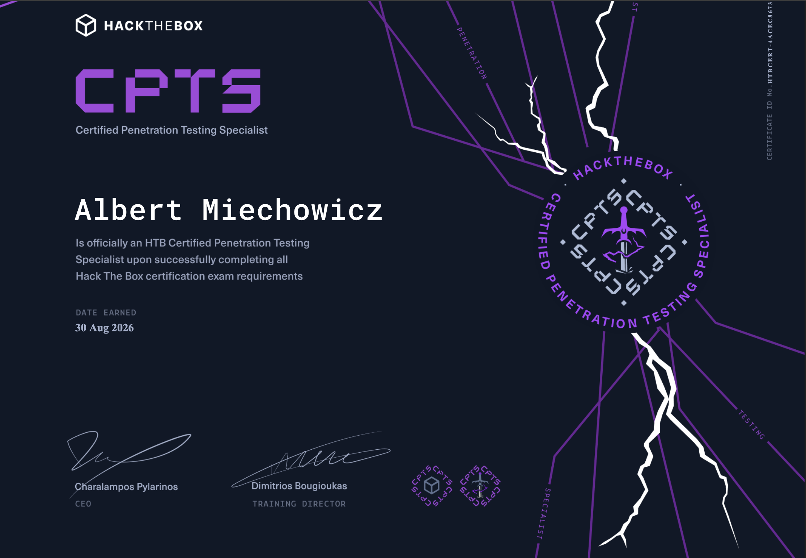

Po ostatnim zdaniu egzaminu CWES postanowiłem iść za ciosem i spróbować zdać egzamin CPTS (Certified Penetration Testing Specialist) od Hack The Box. I jak widać... udało się...
Planowany termin zdawania i podejścia do tego certyfikatu miałem zaplanowany na ferie zimowe, ponieważ niedługo zaczynam 4 klasę technikum i nie czułem się zbytnio przygotowany. Lecz z pomocą przyszedł już dobrze znany Michał "Miblak" Błaszczak, który jak wiecie z poprzedniego posta dał mi możliwość nauki na Hack The Box Enterprise. Miblak więc przypisał mi certyfikat CPTS na platformie enterprise i powiedział że dam rade. Więc około godziny 16 w niedzielę zacząłem przygodę z CPTS!
Przebieg egzaminu — dzień po dniu
Niedziela
Pierwszego dnia od 16 do 23 hakowałem nieprzerwanie i udało mi się zdobyć 4 flagi, z czego byłem zadowolony i co zmotywowało mnie, żeby hakować dalej.
Poniedziałek
Drugiego dnia, wstawszy rano od 10 do 16, udało mi się zdobyć kolejne 4 flagi! A potem, po przerwie, udało mi się zdobyć jeszcze jedną gdzieś koło 22. Łącznie tego dnia zebrałem 5 flag.
Wtorek
Następnego dnia, czyli we wtorek, udało mi się zebrac 2 flagi. Spędziłem nad nimi dużo czasu, ale byłem z siebie bardzo dumny. Tego właśnie dnia stwierdziłem, że mając 11 flag zacznę już powoli pisać raport, ponieważ głowa nie pozwalała mi już na dalsze myślenie xD
Napisałem sporą część raportu, ponieważ przez cały proces gromadziłem solidne notatki i po prostu je przeklejałem, aby pasowały do formatu danego z góry przez Hack The Box.
Środa
W środę rano udało mi się zdobyć 12 flagę i mogłem w 100 procentach skupić się na raporcie. Przygrindowałem i o godzinie 18:21 udało mi się go skończyć po około 5 godzinach sprawdzania i pisania.
Narzędzia
Do egzaminu podszedłem na własnej wirtualnej maszynce na której stał Kali Linux. Narzędzia które używałem i które uważam że są najbardziej potrzbne do zdania to:
- Nmap
- Ligolo-ng
- Bloodhound / Bloodhound-python
- BloodyAD
- CrackMapExec
- LDAPsearch
- Impacket tools
- Evil-WinRM
- Remmina
Egzamin to nie tylko exploitowanie — to przede wszystkim zrozumienie sieci. Jeśli nie potrafisz poruszać się po infrastrukturze, nie zdasz. Nauka pivotowania, tunnelingu i zrozumienie relacji w Active Directory to absolutna podstawa.
Wrażenia z egzaminu
Podczas egzaminu musiałem z siebie dawać naprawdę czasami 120 procent. Mimo że przerobiłem w przeszłości dużo materiałów, które by mnie do niego przygotowały, i tak były miejsca, w których musiałem się zatrzymać. Był to na pewno trudniejszy egzamin od poprzedniego CWES, ale uważam, że flagi 1-8 były dosyć prostoliniowe, dopiero dalej było trochę trudniej, ale też głównie kwestia enumeracji i cierpliwości.
W przeciwieństwie do CWES nie odchodziłem często od komputera. Byłem w niego długo wpatrzony i starałem sie cały czas zachować focus siedząc po 6h+ dziennie, przez co po 2 dni zaczęły boleć mnie oczy... ale to mniejsza...
Rady od Albercika
Oto moje rady, które moim zdaniem mogą wam ułatwić podejście do CPTS:
- Zrozum Active Directory: To absolutna podstawa tego egzaminu. Musisz wiedzieć jak działa Kerberos, LDAP, GPO, ACL — i jak to wszystko wykorzystać. Jeśli AD jest dla ciebie trudne, wróć do materiałów.
- Naucz się pivotować: Ligolo-ng lub inny tunneling tool to must-have. Infrastruktura CPTS jest segmented i bez tunnelingu nie dotrzesz do wielu hostów.
- Notuj wszystko: Podczas pisania raportu twoje notatki to złoto. Bez nich będziesz pisać raport z pamięci, a to droga do błędów.
- Rób screenshoty: Dowody fotograficzne twoich kroków to obowiązkowa część raportu. Nie ma nic gorszego niż zdobycie flagi i brak screena potwierdzającego metodę.
- Daj sobie czas: 10 dni to rozsądny timeframe na zdobycie wymaganych flag. Nie spiesz się — lepiej zrobić to porządnie niż pisać raport w pośpiechu.
- Raportowanie: Profesjonalny raport to połowa sukcesu. Skorzystaj z SysReptor z szablonem CPTS. Struktura, spójność i czytelność mają ogromne znaczenie.
Podsumowanie
Jestem naprawdę dumny z siebie, że zaszedłem tak daleko. Wszystkie te dni spędzone nad komputerem i cały ten czas naprawdę się opłaciły.
CPTS to egzamin, który naprawdę weryfikuje umiejętności. To nie tylko zdobywanie flag — to full scope ataku od rekonesansu do przejęcia całej domeny. Był to dla mnie niesamowity sprawdzian i fantastyczna okazja do nauki.
Nie wiem co dalej... może OSCP...? Haha... jeśli uda mi się go zdobyć w wieku 17 lat, jestem prawie pewien, że będę jednym z najmłodszych, którzy go posiadają, a także jednym z nielicznych, którzy będą mogli się pochwalić taką kolekcją certyfikatów w takim wieku.
Jeśli macie jakieś pytania, chcecie pogadać o podejściu do egzaminu albo po prostu wymienić się doświadczeniami — piszcie na Discord NTHW!